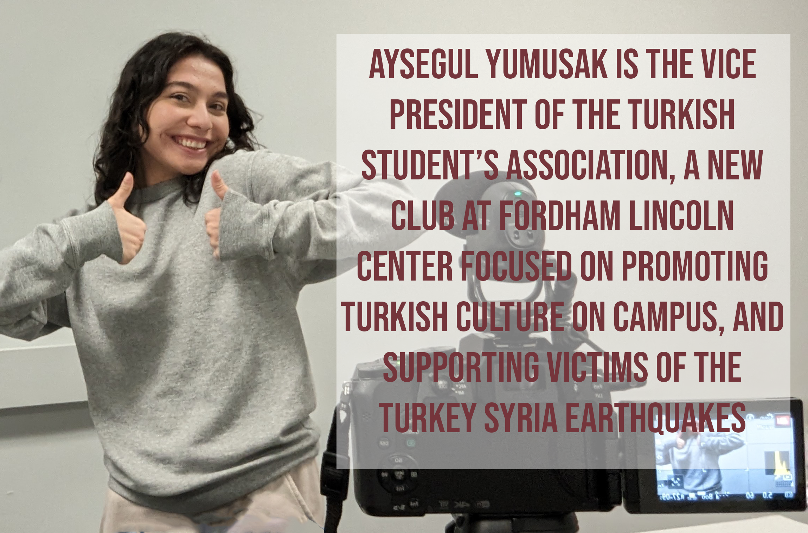

On February 6th, 2023, several high impact earthquakes struck near the border between Turkey and Syria, killing thousands and devastating those coutries. At Fordham Lincoln Center, students formed the Turkish Students Association, or TSA, to fundraise for earthquale victims and raise awareness on campus. We wanted to document what the process for becoming a club was like for TSA, the impact they've had already and what the future holds for them. Nayeli and I interviewed TSA founders and members, contacted Fordham administration and attended fundraiser events held by TSA to get the full picture, and we created this documentary as a result.
Project Proposal Photos
These photos outline what TSA does and what we wanted to capture with our documentary.
TSA in action! This was a fundraiser held before the club was even officially formed.

Aysegul is the Vice President of TSA. She worked with Fordham United Student Government to get TSA up and running.As well as a humanitarian club, TSA is also a multicultural club which has teamed up with other cultural organizations on campus, like the Tomodachi Club.
Watch the documentary here, available on YouTube.com
Like the video and leave a comment on YouTube, and subscribe to my channel!
Documenting the process!
Here are a few photos from the documentary filmmaking process
Nayeli and I interviewed Sena Sari, Treasurer of TSA, on Fordham's Lowenstein Plaza. She was instrumental in establishing TSA.Here's some of the camera equiment we used to film. This is my Lumix G7 with a Zoom recorder and a Takstar attachable mic.While we weren't able to use her interview in the documentary, Tanzema's input was valuable for understanding the story.